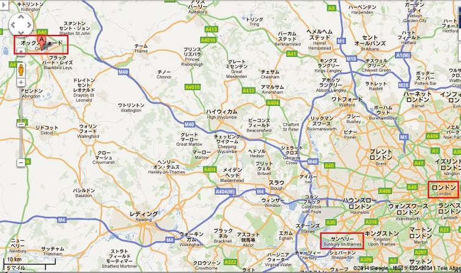
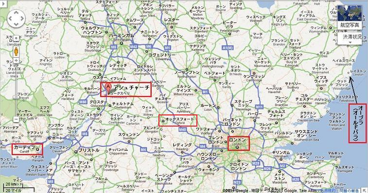
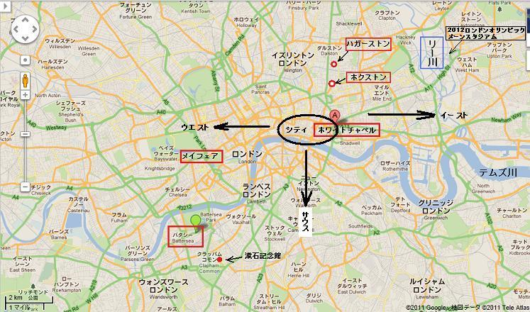
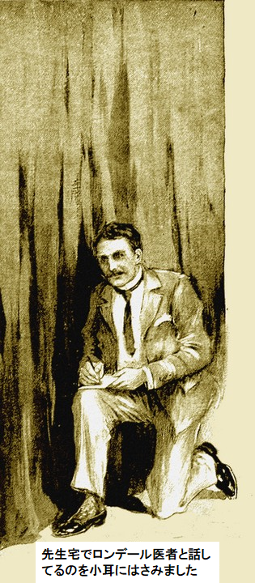
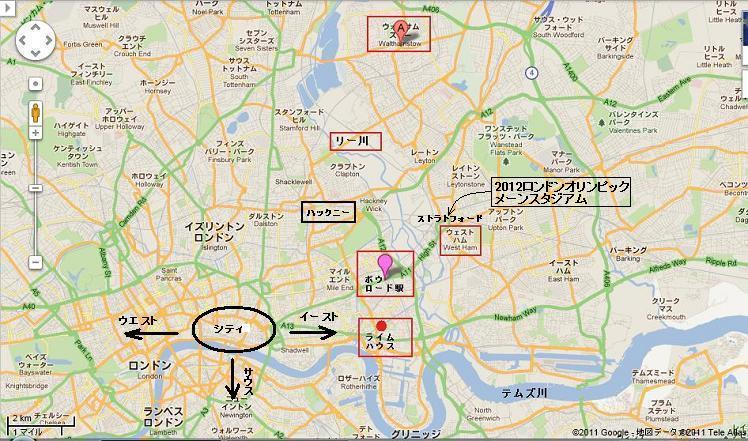
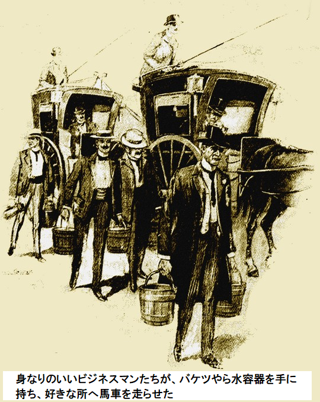
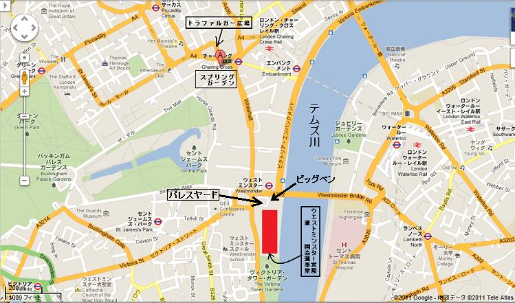
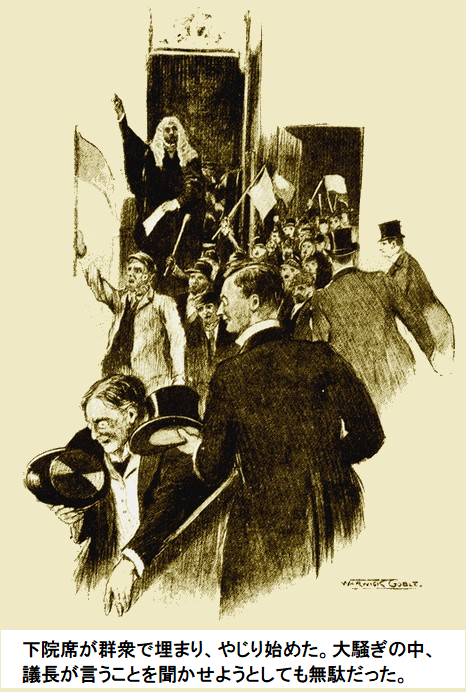
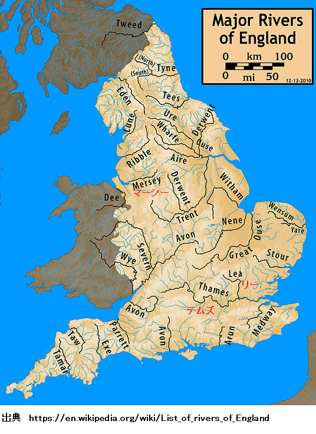
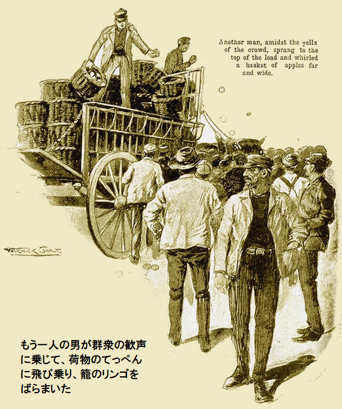

［＃ページの左右中央］
苦難のロンドン物語
［＃改ページ］
空が東から
八月初旬の三週間、太陽が地獄火を降り注ぎ、どの建物も蒸し風呂になり、そよ風一陣吹いて煉獄を和らげる気配すらない。低俗新聞さえ日射病人の数を書かなくなった。熱波のため新聞記者がへばったようだ。
日照りは四月から多少なりとも続いている。噂では淀んだ河川から瞬く間に伝染病が田舎に広がったとか。ずっとロンドンの水道各社は供給に限りがあった。でも警告する風もなく、水不足のようには見えない。熱波は我慢ならなかったが、そのうち止んで、ロンドンは再び息を吹き返すよ、などと語り合っていた。
ダービシャイア教授が首を振って、赤い粉をちりばめたような空を見上げた。のろのろ家路へ歩きながらハーリ通りに向かい、帽子を手に持ち、灰色フロックコートを大きくはだけ、白シャツを出していた。
電動ファンが四一一番地のホールでうなっている。それでも屋内は暑くて重苦しかった。食堂にあかりがポツン、部屋は全面くすんだオーク材、暗褐色の壁は科学者にお似合いだ。
名刺が一枚テーブルの上に置いてある。ダービシャイア教授はうんざりした様子で名刺を読んだ。
『ジェームズ・Ｐ・チェイス』
『モーニング・テレフォン新聞社』
教授がうめいた。
「会わなくちゃいけないなあ。断るだけでも会わなくちゃ。
そり上げた
教授の専門は大規模疾病対策だ。ダービシャイア教授は伝染病と渡り合える男、常に頼りになる男であった。
新聞記者がしつこいのは今に始まったことじゃない。きっと前記チェイス記者が求めたのも単に特ダネ、つまり灼熱天気にかける報道カレー粉ってとこだろう。でも、もしかしたら強引なアメリカ人が偶然に事実を掴んだかもしれない。ダービシャイア教授が電話機をひっつかんでハンドルを回した。
「もしもし。はい。ケンジントン三〇七九五をお願いします……。ロンデールかい？ ああ、ダービシャイアだ。すぐ来てくれないか？ ああ、暑いのは知ってるが、
小声で約束の返事があったので、教授は受話器を置いた。それから煙草に火をつけて、ポケットから取り出したノートに何事か書きつけた。鉛筆で書き込んだ文字は細かいけど達筆だ。
椅子にふんぞり返った姿は四面楚歌の将軍のようにはちっとも見えなかったが、実際はそうだった。しかも薄毛の石頭に抱えた秘密は、ささやき一つでロンドンを発狂させかねなかった。
教授はノートを置いて、物思いにふけった。やがて玄関のベルで起きると、ロンデール医師が入ってきた。教授の顔が輝いた。
「よく来た。会えてうれしいよ、ロンデール。恐ろしい一日だった。ベリティ執事、チェイス氏が来たらここへ呼んでくれ」
大男のベリティ執事が返事した。
「チェイス氏は一時間で戻るとおっしゃってました。ここへご案内しますか？ はい、承知しました」
もう教授はロンデール医師と、カーテンの向こう側で夢中になっていた。小柄なロンデール医師の人影が明らかに興奮して震えている。黒い瞳が金縁眼鏡の奥でメラメラ輝いていた。
「さぁて、遂に来たのか」
とロンデール医師が口火を切った。
ダービシャイア教授が応えた。
「ああ、来た。いつか必然だった。毎日、ひと月、空を見つめて
ロンデール医師も大声で言った。
「その通りだ。おおざっぱだが、ロンドン水道の五分の四はテムズ川からだ。幾多の町や村が川に排水するか？ サンベリ近辺に到達するまでに？ サンベリで水道各社のほとんどが取水する。まったく、多いのだから。それにこのひと月、テムズ川は赤い陽光にあぶられて、淀んだ排水溝も同然だ。市民は今まで何か学ぼうとしたか？ ダービシャイア。ロンドン六百万の市民は独占企業の暴利にいつも苦しめられてないか？ そうだなあ、サンベリとオックスフォード間のどこかで腸チフスが大流行したとしよう。どぶ川になる前に適正な処理をすべきだが、村の排水系は

ダービシャイア教授が冷静に言った。
「それが起こったんだよ。もっと悪い方にだ。まあ、この東部地方紙の記事を聞いてくれ」
『オールデンバーの奇妙な事件』
一日か二日前、帆船サンタアナ号がオールデンバー近くの突端で座礁し、大破した。船は突端に乗り上げ、割れた船体に強い潮流がかかり、すぐ粉々に壊れた。乗員八人はおそらくボートに乗ったものと思われる。というのも現場を誰も見てないからだ。現在のところ、晴れた無風の夜に、なぜサンタアナ号が座礁したかは不可解。船はおそらくどこか外国港からの帰りで、積荷はミカン、最近オールデンバーで何千個も漂着した。沿岸警備隊の推測ではポルトガル船という。
一日か二日前、帆船サンタアナ号がオールデンバー近くの突端で座礁し、大破した。船は突端に乗り上げ、割れた船体に強い潮流がかかり、すぐ粉々に壊れた。乗員八人はおそらくボートに乗ったものと思われる。というのも現場を誰も見てないからだ。現在のところ、晴れた無風の夜に、なぜサンタアナ号が座礁したかは不可解。船はおそらくどこか外国港からの帰りで、積荷はミカン、最近オールデンバーで何千個も漂着した。沿岸警備隊の推測ではポルトガル船という。
ダービシャイア教授が言った。
「当然テムズ川と何の関係があるか知りたいだろう。教えてやろう。サンタアナ号はある目的を持って故意に座礁した。目的はあとで話す。大部分の乗員は近くに上陸し、自分たちの都合でボートを沈めた。オールデンバーからロンドンまではそう遠くない。ほどなくポルトガル人たちはロンドンに着いた。二、三人はここに留まり、五人がアシュチャーチまで歩き始めた。同地は川岸にあり、オックスフォードに近い。金がないので、カーディフまで徒歩で行って、そこで船に乗ろうと考えた。同じく英語が話せないので、アシュチャーチの道を避けた。そのあと三人が病気になり、うち二人が死んだ。田舎の開業医が保健官を呼んだ。後者は怖くなって、私を呼びつけた。それで今帰って来たばかりだ。これを見てみろ」

ダービシャイア教授は濁った液体の入ったガラス瓶を見せて、数滴ガラス板に落とし、高倍率顕微鏡にセットした。ロンデール医師が接眼レンズをのぞいてびっくり仰天。
「ペストだ。細菌がうようよいる。こんなの見たことない。二人でニューオーリンズにいたとき以来の衝撃だ。ダービシャイア、まさか検体の出所は……」
「テムズ川？ そうだよ。アシュチャーチなんか、川へ直接排水だ。それに数日間、船員はペスト熱に苦しんだ。さあ、分かるだろ、なんでサンタアナ号を座礁させて無人にしたか。船員の一人がペストで死んだから皆、船を捨てたのさ。おぞましい自己本位に陥っちゃいかんな。『悪魔は捨て置け』の典型だ」
「おそろしいことだ」
とロンデール医師がうめいた。
「ぞっとする」
とダービシャイア教授もつぶやいた。
淡々と調べている白い沈殿物はガラス瓶の水から取ったもの。小さな蓄電池を台上に置いた。ダービシャイア教授が続けた。
「ロンドン水道の大部分はテムズ川から取っている。記憶で言うけど、ニューリバー社ともう一社だけがリー川から取水している。もし給水が断たれたら、ホクストンとかハガストンとかバタシーなど、つまり人口

「万難を排して給水を断たないと」
とロンデール医師が大声。
ダービシャイア教授が厳粛に言った。
「そうなればロンドンの五分の四は水と共倒れになる。ロンドンは
ロンデール医師が
「考えたよ。早晩来るはずだ。今が君の出番だよ、ダービシャイア。君の滅菌処理だ」
ダービシャイア教授がニヤリ。カーテンの方へ移動。ノートを見たかった。同僚に驚くべき新発見を見せたかった。ノートはあったが、乱されたふしがある。床にちぎれた紙が落ちて、何か速記暗号が書いてある。
それを見たとたん、教授がベルの所へすっ飛んで行き、激しくベルを鳴らした。
「ベリティ、あの悪魔は、チェイス氏のことだが、戻ってきたか」
ベリティ執事がゆっくりと答えた。
「はい、戻られました。ロンデール先生のすぐあとに来られました。お待ちいただいて、それからちょっとしてまた出て行かれました。こうおっしゃってました。忙しそうだからまた来ますと」
「ったく！ 興奮してなかったか？ ベリティ」
「その通りでございます。目がぎらぎらで、それに……」
「もう充分だ。すぐ馬車を呼んでくれ」
こう教授が叫び、内側の元の部屋に戻って来た。
「えらいことだ。
ロンデール医師がうめいた。
「ひどいなあ。これからどうするつもりだ？」
教授が返事して、これからテレフォン新聞の編集長を説得して朝刊に人騒がせな記事を書かないようにする、という。
一時間以内に帰るだろうから、ロンデール医師は待つことにした。状況は表向きそれほど絶望的じゃない。外で車輪がガラガラ、ダービシャイア教授が帽子もかぶらず夜の町へ急行した。
「テレフォン新聞社へ。二〇分で行けば一ポンド金貨だ」
馬車はがむしゃらに突進した。御者は一ポンド稼ぐつもり、つまり訳ありだ。トラファルガー広場へ猛烈に突っ込んだ。そこへ一台の車が無謀に横切った。
その直後ダービシャイア教授は馬車から放り出され頭を強打した。道路に横たわり、意識を失なった。野次馬が集まり、夜会服を着た一人の医者が現れた。
医者が事務的に冷静に言った。
「脳震とうですな。おや、ダービシャイア先生だ。そこのお巡りさん、大至急、救急車だ。チャリングクロス病院まですぐ搬送してくれ」
神経で胃が弱るたちじゃないジェームズ・チェイス氏こと、前ニューヨーク・チャンティクリア新聞記者、現モーニング・テレフォン新聞記者は、ハーリ通りの角で煙草に火をつけた。
夜はまだ浅く、計画を練る時間はたっぷりある。いわゆる「どえらいスクープ」をものにした。実際、低俗報道の歴史上これより大きい事件は思い出せない。
『ロンドン カラカラ しなびたスポンジ 絶対的水不足！ ロンドン 病原菌汚染 地下管から水源からドバーッ！』
こんな踊る見出しがチェイス記者の短髪頭の中でくるくる回っていた。
やっとテレフォン新聞社へ着いて、汚い階段をゆっくり上がった。ノックもせず、主筆専用と書かれた扉を開けた。テレフォン社の主筆がぐったりして、上着とベストを脱いで座っていた。
チェイス記者へお世辞の一つも言わなかった。単に、いったい何が欲しいんだと
チェイス記者は陽気にうなずいて、目の前に一枚の大きな紙を広げた。ちょっと考えて、青鉛筆で六行の
チェイス記者が穏やかに言った。
「最近相当だらけてますね。余りに暑いのでイーストエンドですら毎週の残忍な殺人事件さえ起こりません。でもたまには真珠に当たりますよ。グレディさん、この見出しをどう思いますか」
チェイス記者が白い紙を高く持ち上げ、ガス照明が当たるようにした。グレディ主筆の目から疲れた表情が消え、パッと立ち上がり元気になった。これこそ強壮剤、消沈した魂が切望するものだ。
「情報源は？」
とグレディ主筆が息せき切って尋ねた。
チェイス記者が答えた。
「ダービシャイア先生ですよ。先生宅でロンデール医者と話してるのを小耳にはさみました。それにノートを何とか複写しました」

グレディ主筆が言った。
「勇気がいるぞ。その脅しは帝国を壊すかも、もし……」
チェイス記者が割り込んだ。
「そんなこたぁありません。採用かボツです。やる気がなければフラッシュライト社のサットンが飛びつきますよ」
チェイス記者が見出しをまた明かりに照らすと、グレディ主筆がうなずいた。グレディ主筆は慎重に事を運ぶつもりだ。一度ウラを取る必要がある。グレディ主筆が皮肉を込めて、なんかあり得ない話だなと、ご不審だ。
チェイス記者がブスッと答えた。
「それはないですよ。ペストが帆船で発生し、乗員が知った。あの階級の船員には節操がない。やつら船を捨てて、近くの陸地に乗り上げた。英国の強制隔離法をちょっとは知ってたので、すばやく姿を消した。町医者はこの伝染病を英国コレラと呼んでいる。猛暑天気に腐った果実ってとこですよ」
グレディ主筆がまたうなずいた。蒸し暑い熱風がもう嘘のようだ。新聞社の地下では既にガチャガチャ、ゴウゴウ音がし始めている。通路は足音がバタバタうるさい。
グレディ主筆がきっぱり。
「すぐやってくれ。二段分だ。私は資料を調べてみる」
チェイス記者は上着を脱いですぐ仕事にとりかかった。グレディ主筆は必要な本を探し、事実をまとめ始めた。
読めば読むほど恐ろしいゆゆしい事態が明らかになった。
テムズ川の上流が明らかに毒された。それにテムズ川は過去しばらく太陽で焼かれ、淀んだ排水溝同然だった。その汚水の唯一の行き先がロンドンの地下管。誰が災害の大きさを予想できるだろうか。ほぼロンドン全体がテムズ川から取水している。
グレディ主筆が素早くリチャード・シスキー博士著の参考本を調べてみた限り、わずか二社のロンドン給水会社だけが、テムズから取水してない。日量二十万トンのニューリバー社と、同十万トンのケント社のみが安全だ。
では他の六社の給水源はどうなんだ？ チェルシー社、イーストロンドン社、ウエストミドルセックス社、グランドジャンクション社、サウスワーク社、ボクソール＆ランベス社はすべてテムズ川に依存する。毎日百万トンが前記会社の給水量だ。すごいなあ。毒が洪水のようにイーストエンドに流れ込んでいる。ライムハウスからウエストハム、そしてボウからウォルサムストーまで、誰も忌わしい危険など想像だにしてない。なあに、ロンドンの大疫病なんてどうってことなかったもん。

それにウエストエンドも良くない。サンベリティからメイフェアまでグランドジャンクション社の給水系だから苦しむだろう。
ロンドン特定地区に限れば、運のいいニューリバー社の給水管に接続している人々のみが危険を逃れそうだが、それでもこの衛生地域が有害地域で囲まれる可能性だってあるじゃない？
もし手遅れでなければ、唯一の手だては汚染給水を止めることだ。でもそんなことをすれば、ロンドン人口の五分の四が水無しになり、熱暑下で生命源の一つを奪いかねない。
さらにグレディ主筆が読み進むと、もっと衝撃を受けた。この恐ろしい情報を、手遅れにならないうちに人々に知らせたら、恩人になりやしないか。状況は絶望的に見えるが、テレフォン新聞なら救えるかもしれない。
ダービシャイア教授が秘密裏にする権利はない。その間、当然この恐ろしい危機を回避しようといろいろやっているのだろうけど。
グレディ主筆が思いもよらなかったこと、それはダービシャイア教授がこの病気を何年も研究しており、菌を無力化する方法を発見していたことだ。
グレディ主筆がつぶやいた。
「状況は良くないなあ。まったく、考えるだけで身の毛がよだつ。原稿は出来たか。何か欲しいものは？」
「食い物ですか」
とチェイス記者が尋ねた。
「そうだよ。要らない？ それならますます結構。原稿が二階へ行くと誰も帰れなくなるぞ。新聞を折り畳むまで」
一時間後、印刷機がガタガタ音を立てた。やがて印刷したての大きな荷物が通りへ吐き出された。ギラギラ光るアーク灯の明かりの下では赤帽が汗をかきながら、おばけのような青色荷物車で待っている。通り全体が活気づいている。その間、紫のアーク灯からちょっと離れた場所のロンドンは、眠りこけ……。
やがてロンドンが目覚め、仕事の態勢に入った。まだ恐怖や混乱の兆しはない。テレフォン新聞が十万余の朝食テーブルに置かれた。タブロイド判ニュースを忙しいビジネスマンは読む。新聞を何気なく広げると、五ページに驚くべき見出しが目に入った。見ないわけにはいかなかった。
『テムズ川に毒』
何百万個という伝染病細菌がロンドンに流入。ペスト病原菌が川を汚染。ニューリバー社とケント社のみが無害な水道を供給できる。驚愕の発見はダービシャイア教授による。けさ朝食の水を飲むと死ぬ。毒があるからすぐ閉めよ。前記のいずれにも接続していない場合、および自家井戸がない場合だ。
『直ちに水道の元栓を締めよ』
何百万個という伝染病細菌がロンドンに流入。ペスト病原菌が川を汚染。ニューリバー社とケント社のみが無害な水道を供給できる。驚愕の発見はダービシャイア教授による。けさ朝食の水を飲むと死ぬ。毒があるからすぐ閉めよ。前記のいずれにも接続していない場合、および自家井戸がない場合だ。
『直ちに水道の元栓を締めよ』
いったいどういうことか？ 誰も分からないようだ。朝八時、ロンドンの鼓動は穏やかで規則正しい。一時間後に身もだえする様子は、さながら大型爬虫類が臨終の苦しみに
一〇時ごろ当局が事態を把握した。ちょっとした不運に出会い、一番頼りになる人物が意識不明でチャリングクロス病院に横たわり、この件に何ら光明を与えることが出来なかった。ダービシャイア教授の心臓は大丈夫だったが、回復には時間がかかった。
一方のロンデール医師は時の人となった。だが、ロンドンを襲った大混乱を
はたして危険を真剣に考えているのか？ 答は安心させるものでなかった。ロンデール医師は何百万という軍隊と攻城砲がロンドンを攻撃するのをはるか遠くに眺め、他人事としか聞いてないようだ。
対策はたった一つしかない。慎重に処置する時間はない。ロンドンの大手水道六社が一時間以内に給水を止めた。食事できないし、理由も分からない。真鍮のような真っ赤な空の下、しかも日陰ですらセ氏三十六度だ。
ちょっと想像してみてよ、不思議じゃないか、以前に起こらなかったなんて。考えてもみてよ、二百万人の三分の二が突然、食品同様にに不可欠な水を取り上げられる。考えてみてよ、六百万人の三分の二が川から給水を受け、いつ、ひょんなことで毒入りに変身するかもしれない。
焼けつく陽光の下、数日間、熱風とほこりが続いた後、密集地域のイーストエンドは突然、水が一滴も出なくなった。一時間か二時間は困らなかったが、そのあと刻一刻苦しんだ。やがて各駅は群衆でごった返し、人々は先を争って都心から逃避した。

正午までに仕事が中止になった。ケンジントンからマンションハウスにかけて給水馬車が一台も見られない。集められるだけ荷馬車とタンクをかき集め、ニューリバー社とケントウォーター社に送り、出来るだけ早急に、テムズ川の人口密集地イーストとサウス・イーストに運ぶように指示が出た。
昼食時間になると、シティは妙な光景を呈した。身なりのいいビジネスマンたちがバケツやら水容器を手に持ち、思い思いの所へ馬車を走らせ、公然と水を取りに行く姿があった。御者は駄賃を意のままに吊りあげた。

早朝、ミネラル水の値段が二倍に跳ね上がった由。昼までには販売が当分中止となった。先読みした金持ちどもが在庫を買い占めた。通りは成り行きを心配そうに待つ人々であふれた。
しばらくは恐怖心をうまく制御していた。人々が最も知りたがっていたのは、もっともこのことをあえて口にする者はいなかったが、もう発病したかどうかということ。二時ちょっとすぎ、イブニングフラッシュライト新聞が疑問に答えた。少年が大声をあげながら新聞を肩にかけストランドにやってきた。
「ペスト発生。ペスト患者がライムハウスで二人。ロンデール医師の診断。号外」
少年にドッと群がり、号外はあっという間に売り切れた。少年が呆然として汚い手の平を見れば、銀貨や銅貨がこんもり。
そう、確実だった。ペストの二例はライムハウスの密集地の一角で発生し、ロンデール医師が呼ばれて確認した。同医師は見立てを全く躊躇しなかった。おそらく、フラッシュライト新聞を読んでこの二例がサンタアナ号から移されたものと知っていたら、大混乱はなかっただろう。しかし誰も知らない。
ペストが発生したかもしれないと言うだけで恐怖だ。たぶんこの気の毒な二人は汚染水を飲んで罰を食らったと、皆が口々に言いあった。でもすぐに流行しなかったから、数時間以内に白人の九割が同じ水を飲んでいた。
友人や他人同士、同じ不安を目に浮かべている。もしかしたら次は自分の番かもしれない。肩をすくませる者あり、バーやレストランにしけこんで、こっそりブランデーを求める者あり。
通りにはなお人々が新しい情報を求めて集まっている。このころになると便利な部品で運搬が楽になった。でも結局ニューリバー社やケント社は何もできなかった。
せいぜい可能な給水はたった日量三十万トン、それをいま急にロンドン全域に要請された。飲用と、体と心を洗うに十分な量を要望された。
人口密集地にある大きな蒸留所などは私企業が運営している。イーストやサウスロンドンには多くの
やがて人々が大挙して押し寄せ始めたのはストランド沿い、それにトラファルガー広場につながる通り。ネルソン記念碑近くの泉ではきれいな水が高く吹き上がっている。
途切れることなく人々が押し寄せた広場方向の看板に「ここは汚染兆候なし」と書いてある。人々は泉の脇で狂喜乱舞、水を求めて争い持ち去るも、大混乱してじゃじゃ漏れ、あげくの果てに泉にかがんで、貴重な水を手の平で唇に運ぶ始末。
まだパニックの気配はなく、発病報告もない。夜が更けると、通りに人影がなくなり、何かしら平常状態に戻った。
いまは大災害が避けられたかのようだ。夜を徹して消防士や有志の一団が水不足地域へ貴重な水をせっせと運んでいる。だが個人井戸などを含めても、給水能力は日量三十五万トンにすぎず、これを五十キロ平方にいる六百万人に配らなければならない。
それに結局これは全くの予防策にしか過ぎない。ニューリバー社とケント社は表向き日量二十五万トンを供給したが、これは最大供給水量であり、平均を大きく上回る量だ。
かてて加えて、干ばつが長引き、予備の貯水池も容赦なく引水された。一日か二日で割当水量を半分にせざるを得ないだろう。
繰り返すが、病院や病人世帯では専用の水が不可欠だ。一方、主要鉄道の大部分は運休にされ、地方発の給水タンク列車に使われた。スプリングガーデン当局は超人的に働いた。

一晩中、人の流れは絶えず、トラファルガー広場や、他の無料給水場の間を往来した。やっと朝が来て、またもや
再び通りが忙しくなり始めた。粋に着こなした紳士があちこちいるが、あごや顔が
みな一つの疑問があった。ペストが広がっているかどうかだ。当局の発表でとても嬉しかったのは、さらなる症例の報告が無いという。これを聞いてホッとした。
ロンドンは少し息を吹き返した。敏速に手を打ったため、疫病の流行を回避できた。やがて患者の名前も知れた。恐ろしい代償をロンドンはサンタアナ号難破で払う羽目になった。
しかしながら結局、爆薬へのほんの導火線に過ぎなかった。度を過ぎた無関心と、バカげた噂が大騒動の元となっていく。これから百年先もロンドンの水道は、多くの町村が下水をたれ流す河川から取水していたと、驚き哀れみをもって記録されることだろう。当面、淡々と事実を簡潔に記述する。
低俗新聞が最大限に利用した。レッドバナー紙が支配階級の堕落と無関心を書き立てた。同紙がまた問うたのは、傲慢な立法議員たちが自分たちだけ専用給水を受けているのじゃないか、平民が給水制限されているのに、立法議員たちがいつものようにコーヒーやお茶、ウイスキーや水をぐびぐび飲んでいるんじゃないか。
これはこの種の新聞にありがちで、いつもの下品な邪推であり、出まかせの攻撃であった。だが今度だけは本当だった。見れば下院は専用井戸から専用給水を受けている。
一般にレッドバナー紙はほとんど影響力がないけど、この件だけは人々の口に登り評判になった。ある人は何ら規制を受けることなく貯水塔に接触できる、これを下院議員と称し、すなわち民衆の困惑に全く無関心だ。
焼けるような、あえぐような日々が延々と続いた。人々はおぼろげながら水飢饉がどんなものか分かり始めた。誰もが垢まみれで疲労
イースト地区もウエスト地区も、薄汚れた顔が見られるようになった。夜になるとあちこちで小さな騒動が起きた。貴重な水を運んでいると、奪われる。ロンドン各所の雑貨店は、井戸があると知れると、店が襲われ、混乱に乗じた盗人に商品を持ち去られた。警察は厳しい実力行使によってのみ、なんとか優位を保つことができた。
翌日や二日後にロンドンはどうなるだろうか。夕方、不可欠になったのは、何百万トンという有毒水を放出して、下水管詰まりを解消することだ。これは危険だが、大局的に見てジフテリアを拡散しない。
でも人々の中には喉が渇いて、
時々、警察が急襲してこれら危険人物を蹴散らした。有名な扇動家が信奉者を引き連れてウエストミンスター橋にやってきて、パレスヤードで信奉者の一団に熱弁を激しくぶった。
警察は当座、不意を突かれた。大柄で赤ら顔の扇動家が膨れ上がった無言の群衆を見渡し、ビッグベンの明かりを指差した。口角泡を飛ばして訴え始めた。
「全てはもちろん行政の過失だ。ヨーロッパ大陸ではずっとうまくやっている。キミら男なら、やつらをあそこから引きずり出せ。連れてきて我々のように働かせろ。今日バナー新聞が何と言ったか。高慢な統治者どもは何ともない。何も困っていない。今この瞬間にもたっぷり水を持っている。キミらが水の為に、魂すら売りかねないというのに」
「お前が先頭に立てば付いて行くぜ」
とだみ声があった。
扇動家が辺りをひそかに見渡した。警官の帽子は一つとして見えない。まさに五百人から六百人の向う見ずな男どもがうずうずしている。
扇動家が叫んだ。
「ついてこい。今晩歴史をつくるぞ」
議事堂へ踏み込み、群衆が叫びながら続いた。中にいた数人の警察官はあちこちでもみくちゃ、洪水の枯葉のようだった。
ロビーの静粛な秩序は破れ、真っ青になった議員は議員部屋に逃げ込み、ロンドンが暴動だとか、ならず者の群衆が議会をめちゃくちゃにしたなどと騒いでいる。
議会はどうでもいいような質問を延々と議論していた。議長は職服やかつらの重みに耐えてフムフムとうなずいている。緑色の下院席は議員がちらほら、暑苦しい熱波にぐったりしている。真夜中ごろ長い休憩となるはずなので、喫煙室やバーやテラスは議員であふれていた。
議長がキッと見上げた。

議長席に水が入ったガラスコップと瓶があった。乱入者のうち大胆な一人がコップをつかんでぐいと飲み干した。
この奇抜な行動にどっと拍手喝さい。まだ群衆にはユーモアを理解する余裕がかなりあったが、やがて雰囲気がどうなるか知る由もなかった。政府議員の一人がもう一人にささやいた。
「
一方、群衆はふざけたがる。議長席へ殺到して議長を後ろに押しやり、テーブルをひっくり返し、書類をまき散らした。仲間の外国人が仏国家ラ・マルセイエーズを調子っぱずれで歌い始めた。歌詞が武勇的な為、皆の血を焚きつけた。誰かが大声で叫んだ。
「ここで暇をつぶそうぜ。バーや食堂がある。入って来たときグラスの音がガチャガチャ聞こえたぜ。こっちだ」
群衆が一斉になびき、あたかも一人が全員を統制してるかのよう。まだ大騒ぎの中にも笑い声の余裕があり、全ては順調なように見えたが、意を決した小部隊の警察が現れた。群衆に激しく突入し、瞬く間に悲劇が起きた。
警察が来たぞと叫んだ直後、後ろにいた一人か二人が警棒で殴られて大けがをする一方、ビジター席の最前部にいた者もひどい目にあった。下院部屋はめちゃめちゃになり、外側のロビーには壊れた家具が散乱。
そのとき、人の流れがバーや食堂に押し寄せた。ビビった接客係や給仕係りが数人、持ち場に突っ立っている。水の入ったコップや瓶を見て群衆が狂った。蛇口を全部開けろと要求し、配管をネジ切ると、どっと歓声が上がり、たちまち床にあふれ出たこの水こそ、ロンドン中が求めて騒いでいるものだった。
部屋は割れたガラスや陶磁器が散乱し、床は汚水でじめじめ、びしょびしょ。あちこちで略奪したごちそうをむしゃむしゃ。こんな光景は以前の議会で決して見られなかった。数人の勇敢な議員が騒動を鎮めようと警官の居場所を探した。
さあ、警官が来る。やってきた警官の数二百人、ざっざっ、決然と隊を組んだ警官隊を前に、暴徒は追い立てをくらって、もみ殻のようにさーっと逃げた。五分ちょっとで議会から一掃された。しかし被害は甚大だ。
外では大勢の人々が暴動のニュースを聞いて集まっていた。とても法や秩序を守るような雰囲気じゃないし、騒動の首謀者が無事に逃げるのは無理というもの。
か細い高音で、ずっと離れた群衆の後ろから、誰かが何事か叫び、逮捕に気をつけろと言ってるようだ。パレスヤードにうめき声が上がった。群衆のヤジが手品のようにピタリ止まった。
「何と言ってるんだ？」
とアイルランド議員が
「さっぱりわからんが、トラファルガー広場の水か何かだ。もしかして……」
と他の議員が答えた。
ほんのちょっとの間、またどよめきが上がった。このときは恐怖の感情があった。叫び声が飛び交った。次第に何とか理解できるようになった。
先のアイルランド議員が言った。
「まったく恐れた通りだ。トラファルガー広場の泉が枯れた。大衆の災難だ。見ろ、みんな去った。今晩の行列はない」
大群衆が急速に散会していった。各々が新事態を自分で確かめたかった。トラファルガー広場へ流れる群衆はあたかも生死をさまよっているかのようだ。幸運の女神がトラファルガー広場にあったら、激しい闘争はしなかったろうに。暑さと闘争のさなか、多数が途中で行き倒れ、放置された。
冷たい泉はもうない。貴重な水を求めて容器を
この時とばかり、警察が群衆をあちこちに追っ払い、ついに静寂を取り戻した。
ロンデール医師は帰宅途中で立ち止まり、事態をよく考えた。
「ブルチャー先生を今晩尋ねるか、ダービシャイア教授は朝にするか。いやすぐダービシャイア教授の助言をもらうことにしよう。チャリングクロス病院を訪ねて容態を見舞おう」
このころストランドは比較的静かだった。四、五人の屈強な警官が病院の階段に立ち、警護していた。なぜなら、病院には水がたっぷりあるからだ。かかりつけ医があわてて出てきた。
「ロンデール先生、よくいらっしゃいました。あなたをお
「まさか、悪化したと言うんじゃないだろうね」
「それどころか、ずっと良くなってます。実際、完全に意識があります。あなたに会うまで眠らないと」
ロンドンに垂れこむ
夜明けの早朝、ロンドンにやや静けさが戻った。群衆は、たぶん疲れ果てて眠りこみ、絶望して黙りこくっているに過ぎないし、おそらく夜が明ければ燃え上がるに違いない。下町のイーストエンドではいつも騒動が起こっている。よく働く真面目な人々と、権力を笠に着て役得にすがる連中の間では
夜が明けて再び焼けるような第二ラウンドの兆しがあった。最初、無法の気配はなかった。ただ人々が押し合いへし合い、いらいらしながら水がありそうな所へ向かっていた。自分で水を取りに行った方がよいと考える人々は、給水車など待っていられない。
当然、新聞はお勧め記事がいっぱい書いてある。何千という新聞記者が急造りで、困難を乗り切る為と称し、いい加減な提案を多数、
その中で一つの面白い知見が大衆の耳目を引いた。記者の指摘では水のほかにも渇きを

こんな記事が三つの大衆紙に出た。話はロンドンの隅々で語られた。ホワイトチャペルで議論され、ウエストエンドのクラブで熱心に討論された。
たちまち都心全体が果物を強烈に欲しがった。中にはすぐ法外な値段で売り切れる店があった。ブドウなど通常、重さ一ポンド当たり一ないし二シリングで売れるのが、いまや二十倍になった。オレンジを手押し車に乗せたストランドの行商人が突然小金持ちになった。真昼に向かい、群衆が大型果物店の前に集まり始め、コベント・ガーデン近辺は交通が止まってしまった。
価格が跳ね上がるさまはあたかも果物が絶滅したドードー鳥になったかのようだった。
それでも果物は緊急電報に応えて投入され続けた。仲買人たちが大衆の勢いに乗り、一儲けをたくらんでいるようだ。雷光のように、進行中の出来事がロンドン中に知れ、次第にコベント・ガーデンへの道は人々で埋まった。

やがて好奇心が行き着く先は呪いの怒りだ。大衆の不幸に乗じて儲けを許されるのは誰なんだ？ そんなものは放棄すべきだ。たとえ大衆政治の為であったとしてもだ。
群衆の間を一台の荷馬車が籠や箱を満載して通りかかった。決死の形相をした一人の職工が馬を止めると、もう一人の男が群衆の歓声に押され、荷物のてっぺんに飛び乗り、籠のリンゴをばらまいた。

「お前さん、荷が重すぎるぜ」
とドスのきいた声で御者に言った。
御者は何か言いたそうに歯をむいた。新しい注文を受けたのに何も儲からない。御者はリンゴを一個取って食べ始めた。果物は数分で全部なくなった。
自然発生的に整然と行われた。市場にあらゆる種類の果物がドッと入荷するや、一時間後には空になった。
ちょっとひどいとはいえ、まだかわいげのある大衆だった。だが警察は渋顔だ。一方、通りに居並ぶ警官の半数は内気で、そのうえ場違いな感がして、見るからに数千人の警官は田舎の各署からロンドンに動員されたようだ。真昼ごろになると、大通りを埋めていた大群衆に一つの楽しみが加わった。
これぽっちの理由があるわけじゃないけど、ロンドン中がいつものように働かず、申し合わせて日々の労働を止めた。太陽熱であぶられて歩道は黒光りし、かげろうが揺らめき、群衆の渇きはちっとも癒されなかった。じゃあ、いったいロンドンの端から端まで、大衆が楽しみ、渇きを特別に満たす場所はないのか。
既に群衆の一部が侵入し始め、声高にいろんな酒を求めている。なんでホテル経営者がウイスキーをただで提供しなければならないんだ？ 摩訶不思議なことに、インド大反乱を呼びこんだ
みんな同じように苦しんだ。バーは酒を声高に求める汗臭い人々でごった返し、息がつまりそうだった。要領のいい者は成り行きに任せ、在庫を提供し、涼しい顔で底をついたと言う。
ストランドではある有名なレストランの地下倉庫が略奪され、経営者によればホワイトチャペルやショアディッチの連中に三万ポンドものワインを盗られたという。ストランドでは薄汚れた瓶を手に持った男どもが突っ立って、瓶の首を無造作にたたき落とし、中の貴重な液体を飲んでいる。大部分、当て外れだった。まずいと言ったり、しかめ面して飲んだ貯蔵ブドウジュースはかつて通がべたほめした代物だ。
幸いなことに酔っ払いはほとんどいなかった。群衆が多すぎ、供給が限られたからだ。実際に暴動が起きなかった地区は、不運な酒販売免許業者が略奪者たちにへいこら従った所だ。一、二か所、警察の目の前で略奪されたが、警察はただぼーっと見ているだけで、胡散臭い者どもは大騒ぎで注文しくさって、物好きどころの騒ぎじゃない。
午後一時ごろ、夕刊の初版が出始めた。最新ニュースを中心にとりあげている。やがて誰ともなくミラー新聞の名前が挙がった。誰も出所や理由は知らないが、そうらしい。一斉にミラー紙を求めた。中に重大なニュースがある。だが、通りに同紙が見当たらない。新聞社へ押し掛けた。
建物の屋上に大きな旗が
『パニック終結。ロンドン給水再開。ダービシャイア教授救世主。水道本管使用可。ミラー紙参照』
どういうこと？ 一瞬の沈黙の中、ミラー社の印刷機の轟音が聞こえたような気がした。やがて地下の大扉が開いて、大量の新聞紙が通りに投げ込まれた。代金の請求はなく、誰も払わない。ストランド一帯は新聞紙が白い海となって、男どもの頭上でガサガサと舞った。
向うの散水栓では側溝を忙しく洗浄し、消防車は列をなし、散水して通りを洗っている。全てが突然で不意打ちだったので、夢のように思えた。
奇跡をもたらした人物はあのダービシャイア教授と同一人物か？ ミラー紙にすべて書かれており、読める者なら誰にも分かった。
『昨晩遅く、有名な衛生専門家であるロンデール医師はチャリングクロス病院へ呼ばれ、ダービシャイア教授に面会した。同教授は前夜、脳震とうで同病院へ運ばれていた。あまりよく知られていないかもしれないが、同教授がテムズ川でペスト菌を発見し、その結果ロンドンの給水が全面的に閉鎖された。
間が悪いことに、難局を解決できる唯一の人物が戦闘不能になった。今になってみると分かるのだが、同教授に何事もなければちっとも恐れることはなかった。不幸なことに細菌汚染を報じたが他紙だった。同紙は恐るべき事実を知り、利用することに何のためらいもなかった。テレフォン新聞がしでかした悲惨な結果は既にみなさんご承知のつらい経験だ。
間違いを正すためにダービシャイア教授はテレフォン新聞社へ行く途中で事故にあってしまった。昨夜遅く、当学者がようやく回復し、事の詳細を詳しく尋ね、ロンデール医師にすぐ会った。
ロンデール医師が驚きかつ喜んだのは、すでに事態が処理されていたことだ。どうやら、過去何年もダービシャイア教授は実験を行い、汚染水を無害化しようとしていたようだ。ごく最近、ある処理法が完璧に成功し、疾病細菌まみれの汚染水に効いた。現状は多くの大都市が給水を河川から引き込んでおり、あらゆる汚染に晒されがちだから、ダービシャイア教授の確信するところ、処理方法が見つかるまで公衆の安全はない。
処理方法は既に見つかっており、直におおやけにする予定のまさにそのとき、サンタアナ号の歴史的事例が発生し、アシュチャーチで驚くべきペストが勃発した。
ダービシャイア教授が当該村に行って疑問を確かめてみれば、果たしてテムズ川は致命的な細菌に汚染されていた。実を言うと、殺菌処理が直ちに適用され、テムズ川の数キロ下流を検査したところ、全く無菌という結果だった。
話の趣旨を、ダービシャイア教授が同僚のロンデール医師に伝える暇がなかった。同教授は案ずるほかなく、テレフォン新聞の脅しを差し止めて防ぐことができなかった。
事故で計画がとん挫。そしてロンデール医師は質問にこう認めざるを得なかった。
「テムズ川の水を見たところ、ペスト菌に著しく汚染されている」
その結果、テムズ川からの取水を遮断する以外に手がなかった。厳しい試練は無駄でなかったとしよう。
真実を打ち明けられたロンデール医師はすぐ動いた。アシュチャーチに特別列車を急行させ、とんぼ返りして、テムズ川の検体を持ち帰った。
検査後、小柄な特殊専門家は少しも躊躇せずこの水を飲んだ。ダービシャイア教授によって開発された新しい処置方法が現状を救った。別な方法では災害の拡大を防げなかっただろう』
間が悪いことに、難局を解決できる唯一の人物が戦闘不能になった。今になってみると分かるのだが、同教授に何事もなければちっとも恐れることはなかった。不幸なことに細菌汚染を報じたが他紙だった。同紙は恐るべき事実を知り、利用することに何のためらいもなかった。テレフォン新聞がしでかした悲惨な結果は既にみなさんご承知のつらい経験だ。
間違いを正すためにダービシャイア教授はテレフォン新聞社へ行く途中で事故にあってしまった。昨夜遅く、当学者がようやく回復し、事の詳細を詳しく尋ね、ロンデール医師にすぐ会った。
ロンデール医師が驚きかつ喜んだのは、すでに事態が処理されていたことだ。どうやら、過去何年もダービシャイア教授は実験を行い、汚染水を無害化しようとしていたようだ。ごく最近、ある処理法が完璧に成功し、疾病細菌まみれの汚染水に効いた。現状は多くの大都市が給水を河川から引き込んでおり、あらゆる汚染に晒されがちだから、ダービシャイア教授の確信するところ、処理方法が見つかるまで公衆の安全はない。
処理方法は既に見つかっており、直におおやけにする予定のまさにそのとき、サンタアナ号の歴史的事例が発生し、アシュチャーチで驚くべきペストが勃発した。
ダービシャイア教授が当該村に行って疑問を確かめてみれば、果たしてテムズ川は致命的な細菌に汚染されていた。実を言うと、殺菌処理が直ちに適用され、テムズ川の数キロ下流を検査したところ、全く無菌という結果だった。
話の趣旨を、ダービシャイア教授が同僚のロンデール医師に伝える暇がなかった。同教授は案ずるほかなく、テレフォン新聞の脅しを差し止めて防ぐことができなかった。
事故で計画がとん挫。そしてロンデール医師は質問にこう認めざるを得なかった。
「テムズ川の水を見たところ、ペスト菌に著しく汚染されている」
その結果、テムズ川からの取水を遮断する以外に手がなかった。厳しい試練は無駄でなかったとしよう。
真実を打ち明けられたロンデール医師はすぐ動いた。アシュチャーチに特別列車を急行させ、とんぼ返りして、テムズ川の検体を持ち帰った。
検査後、小柄な特殊専門家は少しも躊躇せずこの水を飲んだ。ダービシャイア教授によって開発された新しい処置方法が現状を救った。別な方法では災害の拡大を防げなかっただろう』
今まで、格調高い地味な新聞記事が報道歴史上こんな衝撃を与えたことがあるか？ 信ぴょうを確かめる必要はない。真実は新聞で見た通りだ。人々はお互い握手し、帽子を空中に放り投げ、焼けつく太陽を忘れた。
ストランドでは消防車が道路に散水する所に、人々が立ち止まり、貴重な水の
ダービシャイア教授は時の英雄となった。偉大な男がベッドに座り、ロンデール医師の話を謙虚に聞いていた。ダービシャイア教授は自分を厳しく責めた。
「君に言うべきだった。あの晩呼びつけたとき、どっきりを用意していた。テムズ川の疾病状況は全て話した。病原菌の形態から事故は
ロンデール医師が真面目に答えた。
「ええ、そうしてくれ。それはいいけど、もし君がまた事故って、また災難が来たら、どうするんだい？」
「身にしみた。君の意見に影響するときは全部見せることにする。あのときはチェイス野郎が何か掴んだと分かったから、話を中断して急ぎ飛んで行って編集長に会わねばならなかった。あの新聞社が脅しネタをつかんでもどうってことない。ただし最終稿を見て、警告の必要なしと確認しさえすればの話だ。だから急いだ結果、事故った。全くドジだった、ロンデール君。いつかこの国は科学者たちの恩恵を知るだろうよ」
ロンデール医師が外を見ると、群衆が喜び叫んで、陽光灼熱など意に介さず、束の間、恍惚状態だ。
ロンデール医師が言った。
「この国は民衆をもう少し大事に扱うだろうよ。科学だけが災害を防ぐことができる。災害は大疫病の十倍も恐ろしいだろうし、何千人じゃなく何万人も死ぬだろう」
ダービシャイア教授も深くうなずいて、こう言った。
「そうなっていたかもしれないな。きっとそうだ。経験を一つ積んだけど、得るものがあったかどうかなあ。イギリスは何も得してないようだ。そうかもしれない。でも見た目以上の何かはある」
了